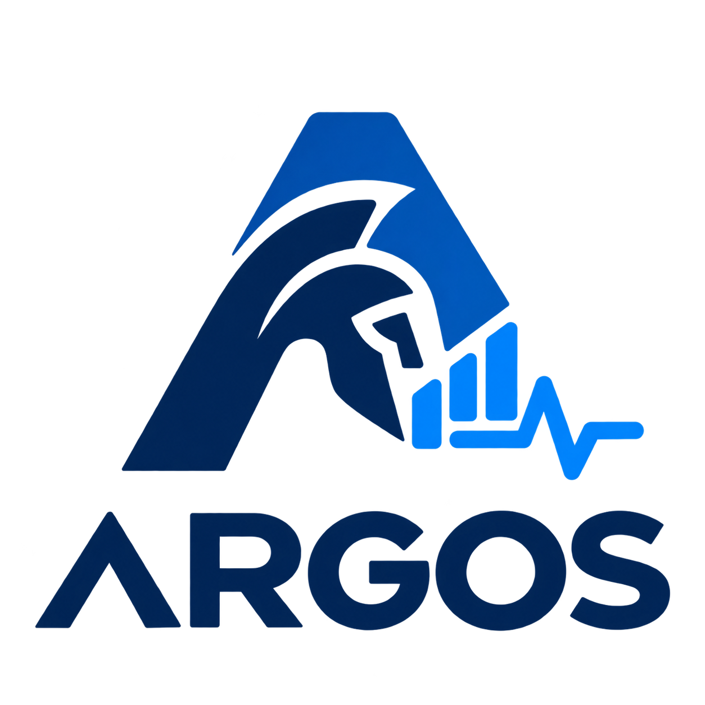

El monitoreo por umbrales fijos genera volumen, no explicación [2].
La causa raíz depende de quién esté de guardia y de lo que recuerde.
La resolución se demora y los problemas ya resueltos se investigan desde cero.
Argos agrega una capa inteligente sobre un stack de observabilidad open-source: detecta el incidente, lo explica, propone la solución y lo documenta para la próxima vez.
| Enfoque | Detecta | Explica | Propone solución | Documenta y reutiliza |
|---|---|---|---|---|
| Umbrales fijos (Nagios, Zabbix) | Sí | No | No | No |
| Observabilidad (Prometheus) [2] | Sí | Parcial | No | No |
| AIOps de incidentes [1], [4] | Sí | Sí | Parcial | No |
| LLM para análisis de logs [3] | No | Sí | Sí | No |
| Argos | Sí | Sí | Sí | Sí |
Tabla de elaboración propia a partir de [1]–[4].
Nicho: documentar cada incidente nuevo para reutilizar la solución.
Diseñar e implementar una plataforma que detecte incidentes por umbrales de alertas, genere con LLM + RAG una síntesis con pasos de resolución y documente automáticamente los incidentes no registrados.
Superficie HTTP (Nginx, API, BD) y stack Prometheus, Loki, Grafana y Alertmanager como código, con reglas de detección que disparan el flujo.
Base vectorial, RAG y orquestación con un LLM que sintetiza, propone la resolución y autodocumenta.
Escenarios k6 (normal, pico y ataque) para evaluar detección, calidad de la propuesta y persistencia.
| Decisión | Justificación |
|---|---|
| Embeddings locales ONNX (MiniLM multilingüe, 384 dimensiones) [6] | Sin costo por consulta; los logs no salen del servidor; funciona en español |
| Persistencia solo en Qdrant | Un motor para incidentes, base de conocimiento y configuración |
| Cadena de LLM con respaldo | Un fallo del proveedor no deja un incidente sin registrar |
| API .NET 10 por capas y panel Next.js | Una sola API; el panel se exporta estático y lo sirve Nginx |
Figura de elaboración propia. Se despliega con un solo docker compose y Terraform sobre LocalStack.
Terraform · LocalStack · Docker Compose
Prometheus · Loki · Grafana · Alertmanager · Alloy
Qdrant · ONNX Runtime · Gemini · Groq · OpenRouter
n8n · SMTP (Gmail)
.NET 10 · Autofac · Next.js · React · SQL Server
k6 · Playwright · Postman
Git · GitHub · backlog por sprint
Claude Code para desarrollo y documentación
| Alerta | Umbral |
|---|---|
| HighErrorRate | 5xx > 5 % · 2 min |
| CriticalErrorRate | 5xx > 20 % · 1 min |
| HighResponseTime | p95 > 2 s · 3 min |
| SuspiciousIP | > 200 req/min por IP |
| ErrorLogSpike | > 1 error/s · 2 min |
| Recurso | Warning / crítico |
|---|---|
| CPU host | 80 % / 95 % |
| Memoria host | 85 % |
| Disco host | 85 % / 95 % |
| Contenedores | CPU 80 % · mem. 85 % |
| Nginx | 800 conex. · 500 req/s |
| Exporters | caído 1 min |
Alertmanager envía a n8n las alertas de Loki y todo lo crítico; los warning de infraestructura van por email directo.
El filtro deja pasar ≥ 3 alertas o 1 crítica; el email va a un pool de destinatarios configurable.
umbral de similitud del RAG [5]: por encima, la alerta es conocida y se reutiliza su solución
proveedores en cadena: flash-lite → Groq → OpenRouter, con 300 s de pausa al que falla
procesa n8n cada alerta con flash-lite (antes, 23 a 68 s)
resolved cierra la ocurrencia: MTTR = fin − inicio, sin enviar otro email.| Escenario | Carga | Requests | p95 | Error | Resultado |
|---|---|---|---|---|---|
| Normal | 10 VUs · 5 min | 1 625 | 3,2 ms | 0 % | 0 alertas |
| Pico | 100 VUs | 17 998 | 2,5 ms | 61 % | rate limit |
| Ataque | 5 + 50 VUs | 28 454 | — | 96 % | 4 alertas |
| Flood L7 | 20 → 80 req/s | — | — | 429 | corta Nginx |
Las 4 alertas llegaron a n8n y no se re-documentaron porque ya tenían runbook en la base.
propuestas con el comando exacto
similitud en la 2.ª ocurrencia (antes 0,40): sin LLM
accionabilidad 1–5 con lo aprendido (antes 2,5)
Figura de elaboración propia. En F1 y F2, ~8,8 min del MTTR son la espera a que se limpie la ventana de 5 min de la regla.
| Objetivo | Logrado | Pendiente | Avance |
|---|---|---|---|
| OE1 Observabilidad | Módulo Terraform (LocalStack y AWS), CI y 18 reglas | Aplicar el módulo en AWS | 90 % |
| OE2 Capa inteligente | RAG, n8n, cadena de LLM, autodoc y panel | — | 100 % |
| OE3 Validación | k6, 7 fallas, calidad, aprendizaje y tiempos | Línea base manual de MTTR | 95 % |
sprints cerrados
contenedores
pruebas E2E del panel aprobadas
La segunda ocurrencia de una alerta nueva se reconoce con similitud ≥ 0,97 contra el documento que generó la propia plataforma.
La cadena de respaldo sostuvo el flujo cuando el modelo principal original falló todas las solicitudes.
Stack open-source, embeddings locales y despliegue reproducible con Docker Compose y Terraform.
Argos cubre el vacío del estado del arte: reduce la dependencia de personas puntuales y guarda lo aprendido para reutilizarlo.
| Dificultad | Ajuste |
|---|---|
gemini-flash-latest falló 17/17 por saturación | Principal flash-lite + respaldo |
| La misma alerta puntuaba 0,40 contra su propio documento | Guardar con el mismo texto que se busca |
| Endpoints internos permitían falsear la KB | Token interno y bloqueo en el proxy |
| Argos conocía los contenedores del servicio | Inferir desde Nginx; contexto y runbooks como configuración |
Riesgos: límites de los planes gratuitos de LLM y envío de logs a proveedores externos.
Aplicar en AWS el módulo Terraform ya probado en LocalStack y medir latencia y error rate.
Medir el MTTR con y sin Argos; las herramientas ya están en el repositorio.
Un WAF o reglas de Loki por patrón para escaneos e intentos de inyección.
Revisar secretos en los documentos antes de enviarlos al LLM (las IP ya se seudonimizan) y exponer métricas con OpenTelemetry.
Muchas gracias. Quedo a disposición para sus preguntas.
Lista completa (32 referencias, incluida la documentación de cada herramienta) en el Informe Final.